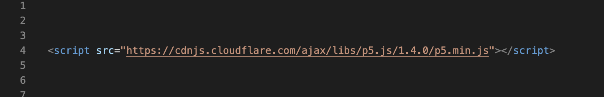

Learn How
Step 1: Setup
The first step is to download p5.js from the official website (https://p5js.org/download/) and include it in your HTML file by adding the following line in the <head> section:
Step 2: Creating a canvas
Next, you need to create a canvas element where you can draw your graphics. You can do this by adding the following code in the <body> section of your HTML file:
This will create a canvas element with a width and height of 400 pixels, and set the background color to light gray.
Step 3: Drawing shapes
Now that you have a canvas element, you can start drawing shapes on it. Here's an example of how to draw a rectangle:
This will draw a rectangle with a width and height of 100 pixels, starting from the point (50, 50) on the canvas.
Step 4: Adding interactivity
p5.js allows you to add interactivity to your sketches by detecting user input, such as mouse clicks and keyboard presses. Here's an example of how to change the color of a rectangle when the mouse is clicked:
This will change the color of the rectangle to a random color whenever the mouse is clicked.
Step 5: Animating your sketch
Finally, you can add animation to your sketch by changing the properties of your shapes over time. Here's an example of how to make a circle move across the canvas:
This will draw a circle at position (50, 200) and move it to the right by one pixel every frame.
That's it! With these basic concepts, you can start creating your own p5.js sketches. There are many more features and functions available in p5.js, so make sure to check out the official documentation for more information (https://p5js.org/reference/).